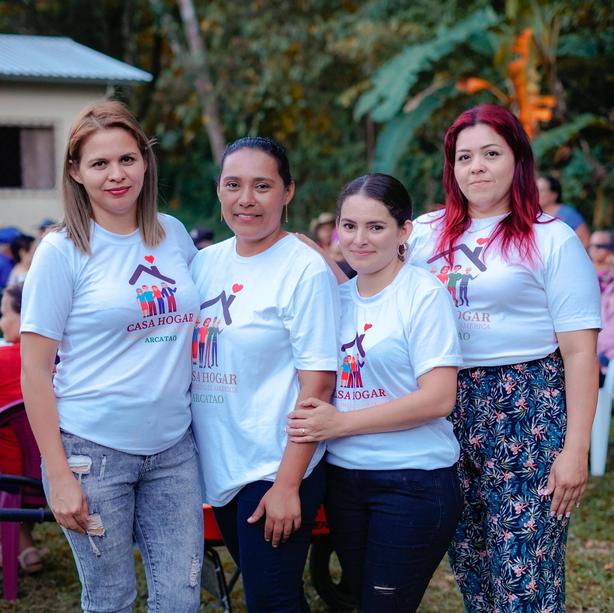

Nuestros Socios y Colaboradores


En El Salvador, es tradición que los hijos adultos cuiden a sus padres mayores. Pero en el pequeño pueblo rural de Arcatao, la migración y el legado de 12 años de guerra civil han dejado a aproximadamente 200 adultos mayores sin ese apoyo. Casa Hogar fue creada por líderes locales para llenar ese vacío, y Con Corazón ayuda a financiar su trabajo.
El centro para adultos mayores de Casa Hogar en Arcatao es un lugar de encuentro donde las personas mayores se reúnen para talleres de salud, clases de ejercicio, aeróbicos, fisioterapia y actividades sociales. Se ofrecen chequeos médicos en el lugar. Las ferias de salud se realizan cada dos meses, atendiendo a 35 adultos mayores a la vez con atención dental, nutricional y médica.
Para los adultos mayores que no pueden desplazarse, la enfermera de Casa Hogar los visita en casa, controlando la presión arterial, revisando medicamentos y entregando alimentos, pañales para adultos e insumos esenciales. Entre los atendidos está Juana Echeverría, de 104 años, quien recibe visitas regulares del equipo de Casa Hogar.
"Casa Hogar ayuda de diferentes maneras — ayuda a la salud mental, a la salud personal, a la salud emocional. Estar unidos y reunirse con frecuencia, eso le sirve a una persona."— María, adulta mayor de Casa Hogar
Casa Hogar es liderada y operada por un dedicado equipo local de mujeres en Arcatao. Con Corazón apoya su trabajo desde los Estados Unidos a través de recaudación de fondos, relaciones con donantes y supervisión financiera. Los fondos se transfieren a través de nuestro patrocinador fiscal, la Seattle International Foundation, a FUDEMS, una organización local sin fines de lucro y socia en Arcatao. La Universidad de Saint Joseph en Filadelfia financia equipo médico e insumos. Juntos, nos aseguramos de que el personal de Casa Hogar tenga lo que necesita para servir a los adultos mayores de su comunidad.

El personal local es el corazón de las actividades, servicios, atención y construcción de comunidad que ofrece Casa Hogar. Las donaciones a Con Corazón financian sus salarios y otros gastos operativos de Casa Hogar.
Donar Ahora